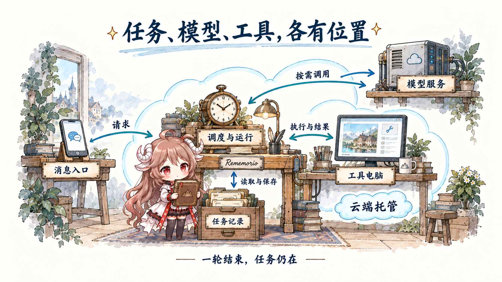
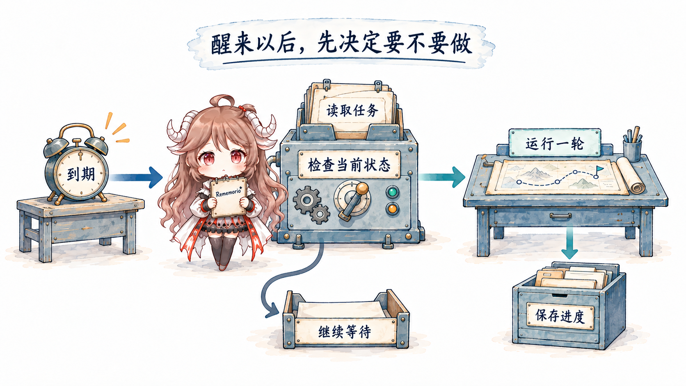
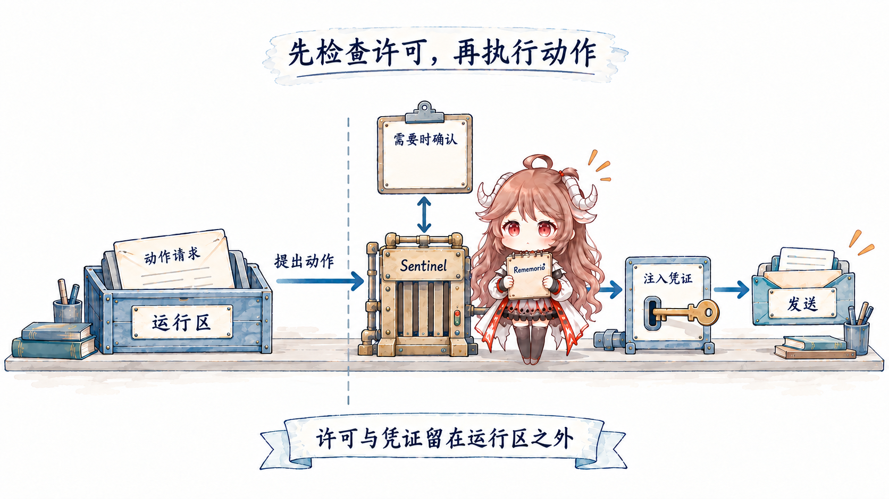
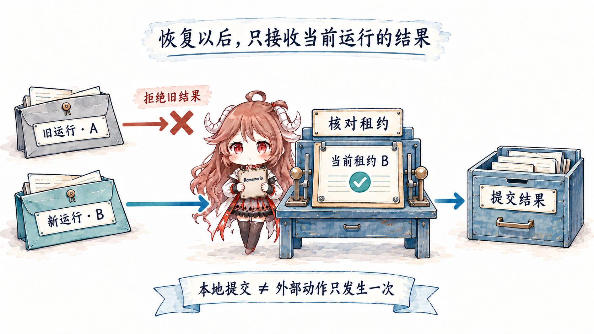
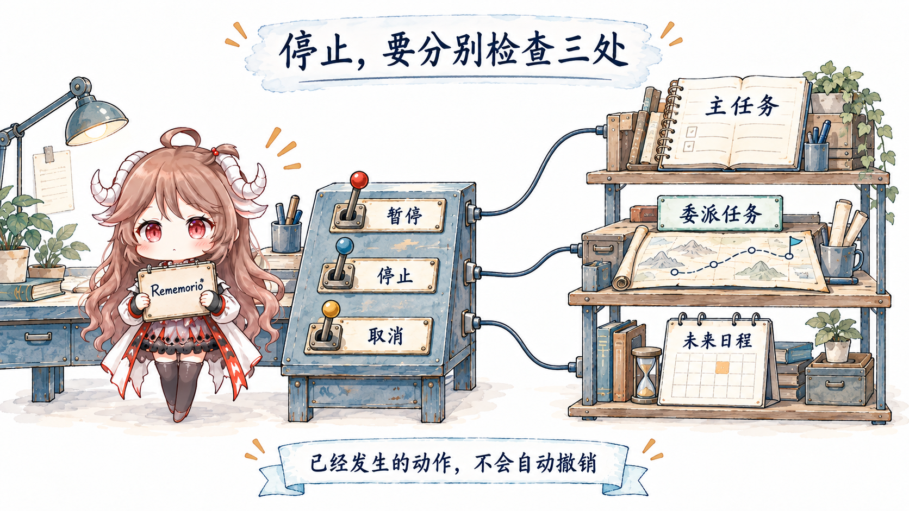

晚上十一点，你让助手跟进两周后的京都旅行，然后合上电脑。第二天在地铁上打开手机，看见一条消息：“乙酒店涨价了，丙还在预算内；给酒店的询问信已经写好，等你确认。”这几句话背后，比写出一份攻略多了一整套工程：你不在线时，仍要有人记得这件事，到了合适的时间再做一步，并知道哪里必须等你。
Meta 的 Muse 与 OpenAI 的 Dots 把这样的持续协作放到了产品中心。要看懂它们，先追踪一件最朴素的事：合上电脑以后，明早的查价究竟在哪台机器上发生？回答它，才能继续讨论框架、记忆、权限和“自主”。前七篇介绍的 Prompt、Context、Harness、Agent Loop、Outer Loop 和 Evals，也会因此从一组概念变成一项真正跨天的工作。
这篇沿一次旅行筹备展开：先找出任务、模型和工具各在哪里运行，再看云端怎样唤醒任务、接上昨天、等待本机或用户，最后处理重启与取消。读完后，你应该能判断一个 Agent 是否真能在你离线后继续，以及它具体能继续哪一段。不要求先读完前七篇。
资料范围：核对日期为 。Muse、Dots 的产品行为以官方资料为准；源码固定到 nanoMuse 4f644c9 与 OpenDots c2569bb，两者均为社区项目。旅行案例、通用部署图与验收方法是教学设计，不能用来推断官方未公开的后端；本文没有运行真实账户上的长期任务。
一、你离开之后，任务留在哪里
1.1 一次回答结束了，一件事还没有结束
先把请求说清：“两周后去京都，住宿总预算六千元。先给我三组备选，每天检查一次；超预算或需要决定时再提醒我。联系酒店前让我确认邮件。”第一轮查资料、列备选、保存来源与查询时间，做到这里就可以结束。旅行还没开始，明天却已经有了要继续做的事。
第二轮不必延续昨天那个模型请求。它只需读到当前预算、备选与约定，再检查一次。模型在中间可以完全不推理；保留下来的，是任务及其下一步。本文所说的个人 Agent，就是能围绕个人的持续责任，多次读取有关材料并采取行动的助手。偏好、私有资料和许可让它成为“个人”的；保存、唤醒与恢复让这份责任跨越一次对话。
1.2 云端托管，托管的究竟是什么
假如调度程序、查价脚本和旅行记录都在你的笔记本上，电脑睡眠后，明早的检查就失去了执行条件。即使脚本每一步都调用远程模型 API，模型服务也不会因此知道自己明天还要来查价。模型在哪里回答，与谁负责让下一轮发生，是两件需要分别查明的事。
把这份责任交给云端，意味着有一个不依赖你当前设备在线的服务，保存任务、接收时间或事件触发，并安排可用的执行环境。你用手机发消息，服务读取旅行记录，调用模型判断下一步，让工具查询报价，再保存结果。手机只是这次交互的入口，浏览器页面关闭也不等于任务被取消。

工具环境还要单独看。查价可能调用网页接口，也可能在一台远程电脑的浏览器里完成；写代码可能进入另一个沙箱。模型给出下一步建议，实际文件和浏览器状态则留在执行工具的环境中。关闭聊天窗口、结束一次模型请求、销毁工具沙箱、删除任务记录，会造成四种不同的后果。
这让“持续在线”有了更准确的含义：服务能够在需要时接住工作，任务记录能够支持下一轮继续。它不要求同一个进程永远活着，更不要求模型两周不间断地思考。本文把这类安排称为云端托管的个人 Agent；“云端”说明责任放在哪里，“个人”说明它替谁持续做事。
1.3 框架能放到云端，产品还要把服务运营起来
很多框架教程从本机的一条启动命令开始，那是方便开发的入口。以 Google ADK 的官方部署指南为例，同一框架可以部署到 Cloud Run、GKE 或自管容器环境。框架帮助你组装循环与工具，部署决定程序实际在哪里运行；一个云端产品还要持续照看任务、账户、资源和故障。三者回答的问题不同。
因此，用开源框架把旅行助手部署到自己租用的服务器，同样可以获得离开笔记本后继续运行的能力；维护服务的责任落在你身上。反过来，一个带网页界面的助手，如果关键工具仍跑在本机，也可能在合盖后停住。《Agent 的工作现场在哪里》从框架角度拆过这些位置；这里继续追问：把位置选好以后，谁保证两周里的每一次接力都有着落？
1.4 Muse 与 Dots：已披露到哪里，源码又在哪里
Meta 于 9 月 8 日介绍 Muse。其架构说明披露，每位用户有一台专属 Linux 云端虚拟机，带浏览器与存储，客户端连接这台机器。OpenAI 于 9 月 29 日介绍 Dots；官方文档同样将它描述为在云端拥有电脑、能在用户设备离线时继续工作的个人 Agent。两者都符合这里的托管特征，但已披露的架构粒度不同，不能据此认定底层部署相同。
截至本文核对时，尚未找到这两个产品完整运行服务的官方公开仓库。可读材料分成三类：官方产品与架构说明、独立社区实现、第三方整理的资料。它们回答的问题不同，不能因为名字相近就互相代替。
| 材料 | 本文使用范围 | 不能据此判断什么 |
|---|---|---|
| Muse / Dots 官方文档 | 功能、用户控制与已披露架构 | 未公开的完整执行路径 |
| nanoMuse · GPL-3.0-or-later | Python 路径的目标调度、上下文组装与工具检查 | Meta Muse 的服务代码；也不代表该仓库所有客户端都走同一路径 |
| OpenDots · MIT | 社区模板中的定时任务、租约与结果提交 | OpenAI Dots 的内部实现或完整功能对等 |
| MuseAI-Skills · 第三方归档 | 补充检索线索 | 来源真实性、当前官方行为、完整源码或统一开源许可 |
因此，下面先建立一条可迁移的任务路径，再看两份社区源码分别实现了其中哪一段。它们不是一套拼装好的“官方替身”。
二、到时间以后，谁决定运行下一轮
2.1 唤醒只是一次重新检查的机会
第二天早上，查价时间到了。此时你可能正在修改目的地，也可能已经取消旅行。若调度器只会把昨天的提示词重新发给模型，就可能继续搜索一个过时方案。更可靠的做法是先读任务状态，确认目标仍有效、没有另一次执行正在修改它，而且这次检查确实符合约定。

运行一轮结束时，应留下三种结果之一：已有可验证的进展；需要用户提供信息或授权；目前没有值得做的事。第三种也可以是正常结果。旅行计划不会因为后台醒了十次就变得更好，反而可能增加费用和重复通知。调度器的工作是让一次有理由的执行发生，而不是让模型永远保持忙碌。
2.2 nanoMuse：先检查状态，再选一个目标
先找调度器住在哪里。nanoMuse 的 MuseService.start()在服务进程里创建后台调度任务。它会随这份服务运行；若服务只在笔记本上启动，机器睡眠并不会把这个循环自动迁到云端。读到“支持主动任务”，还要接着确认服务由谁保活、停机后由谁恢复。
在固定版本的 Python 服务中，_goal_scheduler()是一条很适合阅读的外层循环。它先处理到期提醒、目标提醒、日历刷新、事件触发和邮件轮询等工作，再检查下一次主动推进的时间。尚未到期时，它短暂等待，以便设置变化能较快生效。
到了主动推进的时间，服务重新安排下一次检查，然后判断：主动模式是否开启、现在是否处于静默时段、主会话是否正在运行或还有待处理消息。条件不合适就结束这次检查。记忆整理或动态更新若到期，还会先占用这次机会；这些分支之后，才可能选择一个目标。
后台检查
→ 提醒、日历、事件、邮件等各自检查
→ 主动推进时间到了吗？
→ 已开启主动模式，且不在静默时段吗？
→ 主会话空闲，且没有排队消息吗？
→ 本次是否先做维护？
→ 选择一个仍有下一步的活动目标这个顺序影响实际行为：提醒与邮件轮询位于主动推进开关之前，因此不能从后半段的 continue 推断“关闭主动模式就停止全部后台活动”。同样，静默时段是否限制某项工作，要继续读对应分支，不能只看一个总开关的名称。
2.2.1 把目标交回一次普通执行
_pick_goal_for_pass()只考虑仍为活动状态且有下一步的目标，优先逾期目标，再比较更新时间。advance_goal()再次检查目标状态，把渲染后的目标作为消息送入主线程。调度器挑选要处理的工作，Agent 再判断怎样推进；前者没有直接宣布某个里程碑完成。
放回旅行案例，这相当于服务交来“今天检查这项行程”，而不是替模型决定“必须重新订酒店”。这种安排能复用普通会话的工具循环，也让后台工作与前台对话竞争同一个执行机会。它简化了协调，但可能使后台推进延迟；本文没有把这份代码解释为严格准点的调度保证。
三、醒来之后，拿什么接上昨天
3.1 偏好、进度和下一次检查各记一件事
到第三天，你把住宿预算改成五千元。系统需要区分三类记录：“喜欢安静的房间”是以后可能复用的偏好；“三家备选中，甲已超预算”是这次旅行的进度；“明早九点再检查”是运行计划。三者可能一起被读取，但删除其中一项，不应该靠猜测来决定另外两项是否也失效。
例如取消每天查价，通常只应停止那个检查计划；已有报价和偏好仍然有用。反过来，要求忘记某个偏好，需要检查已保存的任务摘要是否仍引用它，否则后续运行可能又从摘要中把它带回来。这是存储设计应回答的问题，不能只靠聊天里的一句“已忘记”来验收。
3.2 nanoMuse：从保存的记录重建当前输入
应用初始化分别创建记忆与目标存储。在一轮执行开始时，MuseAgent.run()先召回有关记忆，再构建系统提示。recall_for() 与 build_system_prompt()显示了两个具体限制：注入记忆有数量上限；活动目标取列表中的前五项，并把进度、期限、下一步及待答复的计划变更写入文本。
这不是把整个数据库塞进每一次请求。系统先挑选，再格式化为模型能读的材料。若新的五千元预算没有进入当前请求，模型即使准确理解了旧记录，也会继续给出错误方案。因此排查“怎么又忘了”时，应先查预算是否保存、旧值是否失效、哪份记录被召回，最后才判断模型是否忽略了眼前的信息。
Dots 的记忆说明也区分当前上下文、相关的 ChatGPT memory 与 dot 自己保存的笔记；后者不是完整聊天转录，修改 ChatGPT 的记忆设置也不一定修改已有笔记。这是用户可见的产品说明，不是对其召回算法或数据库结构的披露。
{
"task": "京都旅行",
"budget": { "value": 5000, "currency": "CNY", "revision": 2 },
"progress": "保留乙、丙两家；甲已超预算",
"next_check": "明早 09:00，Asia/Shanghai",
"send_policy": "给酒店发信前确认收件人与正文"
}进度记录还应保存关键来源和观察时间。酒店昨晚可取消，今天可能已经过了期限；旧事实可用于解释历史，新的行动必须先判断它是否仍然有效。长期记忆带来的收益，是少重复收集稳定材料；它带来的成本，是必须处理过期、冲突和删除。
四、云端做到一半，需要你的电脑怎么办
4.1 可以继续的工作，与必须等待的那一步
第五天，你补充：“把报价填进我电脑上的旅行表格，再和里面的已付款项核对。”公开报价仍能在云端查询，但那份尚未上传的文件只在家里的笔记本上。此时任务需要跨到另一台机器。云端负责跟进，不代表每一个工具都在云端可用。
Dots 的电脑连接说明提供了这样的组合：任务可以由云端管理，同时使用已连接电脑上的文件与工具；本机需要联网并保持 ChatGPT 应用开启。文档也明确区分离线与撤销访问：离线只是当前不可用，连接许可仍可能保留。
一个清楚的任务记录应该写：“报价已更新；核对已付款项需要本机表格，等待电脑上线。”与表格无关的材料可以继续整理；依赖核对结果的总预算结论则暂时不能给。这样用户能区分“做了一半，在等什么”和“整个任务失败了”，服务也不用每分钟反复唤醒模型询问同一个无解的问题。
等你晚上开机，系统应先重读预算、表格版本和访问许可，再决定要不要继续。若你已在手机上取消旅行，旧的写表格请求就该失效；若你撤销了电脑访问，设备重新在线也不应恢复它。能连上是一项执行条件，当前任务与许可仍有效是另外两项。
4.2 屏幕出现在你眼前，工作仍可能在远处
还有一种很容易误判的位置：你打开云端电脑的画面，手动登录酒店网站。Dots 的文档说明区分查看与接管，并指出云端浏览器不继承本机浏览器的登录。你眼前显示的是远程会话；在这个画面里操作，并没有把工作迁回你的笔记本。
因此，排查“我明明已经登录了”时，先问是哪台电脑、哪个浏览器、哪个账户。若改用本机完成一步，也要明确结果怎样回到任务记录。跨设备协作的代价，就藏在这些看似相同的窗口之间。等文件和账户都到位，下一道问题才是：现在能否真的把邮件发出去？
五、查到信息以后，谁允许它真的行动
5.1 “替我准备”走到“替我发送”的那一步
第六天，Agent 已经写好一封给酒店的邮件。草稿与发送的区别非常具体：发送会把内容交给另一个人，可能披露出行时间，也可能形成后续承诺。确认预算与偏好只能帮助写好草稿，不能自动回答“这次允许发给谁、发送哪些内容”。
在教学系统里，可以让模型提出动作，另一个执行组件检查收件人、正文版本和当前许可，获准后才调用邮件服务。如果你确认后正文又被改动，就需要重新匹配许可范围。把“用户之前说过可以”留给模型凭聊天印象判断，会丢掉这些具体条件。

5.2 Muse 的区外检查与 nanoMuse 的进程内检查
Meta 的架构说明把 Muse 的 runtime cell 与区外服务分开：Sentinel 决定连接器动作与网络出口的许可；需要用户确认时，客户端直接与 Sentinel 交互；具体请求获准后，真实凭证才在网络边界替换占位凭证。这些是官方披露的设计，本文没有独立验证其部署效果。
这个设计值得学习的是控制位置。若运行区读到恶意网页，网页内容可能影响模型建议，但不应因此取得修改许可记录或读取真实凭证的能力。把检查放在另一个受保护的执行位置，是为了让“模型产生了错误建议”和“外部动作实际发生”之间仍有阻断机会。
nanoMuse 使用了同名的 Sentinel，但不能直接套用这套隔离结论。其 Python 路径在应用中构造 Sentinel 对象，工具调用经过guard()评估策略、匹配已有授权或询问用户，再允许或拒绝执行。它有可读的许可流程，进程内对象本身却不能证明拥有 Muse 文档描述的区外隔离。
5.2.1 读安全代码，要把改变结论的分支读完
这里有两个很容易读漏的条件。第一，ASK 分支遇到 mode == "auto" 会转为允许，所以不能写成“所有有风险的调用一定询问用户”。第二，凭证占位符处理还要求工具声明接受秘密；不接受的工具会收到失败结果，并非所有工具都能把占位符兑换成凭证。检查应跟着实际调用分支走，而不是停在类名或设计介绍。
Dots 的主动研究说明则给出了另一条清楚的用户界限：这类后台研究可以读取获准材料并保存私有笔记，本身不发送消息、不修改应用，也不操作电脑；后续行动另外遵守许可。因而“发现酒店涨价”与“发信要求改价”必须分别判断。它也不同于已经明确授权的周期任务。
六、进程断了，下一轮怎样接手
云端也会重启、更新和更换执行环境。假如第八天工作进程退出，下一轮需要从已保存的预算、报价和动作记录继续。把数据库文件留在会被销毁的临时容器里，重建后仍然可能丢失；要靠持久卷、外部数据库或明确的快照机制保留它。备份负责数据丢失后的恢复，任务租约则处理多个运行交接，两者解决的问题不同。
6.1 给每次运行一张会失效的工作凭证
记录保住了，还要判断谁能接手。原进程可能已经退出，也可能只是响应迟到。新进程不能永远等它，也不能让一个迟到的旧结果覆盖新结果。OpenDots 的任务存储展示了一种具体做法：领取任务时分配一个随机标识，并记下有效期限；提交结果时检查这个标识是否仍属于当前运行。这就是这里所说的租约。

Runner每秒检查任务，但同一个实例已有活动运行时不会再领取。Store.claim()在事务里检查暂停与研究开关，把租约过期的运行重新排队，再领取一个排队任务或已到下次时间的完成任务；新的租约期限是三分钟。
领取后，Runner 设置九十秒超时，并定期检查自己是否仍持有任务。owns() 与 finish()比较数据库当前状态和租约标识。旧运行即使晚到，也不能凭已经被替换的标识写入完成结果。注意，owns() 本身没有比较时钟：期限过后，由下一次领取流程处理过期租约，二者共同构成恢复路径。
6.2 “每天一次”背后也有不同的时间语义
这份实现的周期任务在成功完成时，以“完成时间加间隔”计算下一次运行。因此一次执行耗时变长，后续时间也会向后移动。它不是固定墙钟时刻的 cron。失败分支把任务标为 failed，不会像成功分支那样安排下一次时间；“租约过期后重新排队”不能被概括成“所有失败都会自动重试”。
还要沿入口确认究竟执行谁。Runner 接受一个可注入的执行函数；入口提供的函数查出任务关联的 Intelligence 会话，再调用 platform.turn()。SQLite 文件路径由服务读取，Runner 随服务启动和关闭。这里的“本地”是相对于服务进程：服务部署在服务器上，调度记录就在服务器所用的存储里。关掉前端页面与停掉服务不是同一个动作；远程会话服务也不能代替这个 Runner 的调度职责。
6.3 记录只提交一次，仍不保证邮件只发送一次
租约解决的是谁能修改这份服务端任务记录。假设邮件服务已经接受请求，进程却在记下成功前断开；重启后，任务存储里看到的仍可能是“结果未知”。直接重发会造成重复邮件，直接标失败又会误导用户。这个问题发生在外部服务与任务存储之间，单靠租约不能消除。
发送意图已记录 → 外部服务接受 → 任务尚未记录成功 → 进程断开
恢复时：先查询外部回执，或用服务支持的幂等标识核对
确认没发生，才重试
无法确认，就保存“结果未知”，交给用户决定对旅行任务而言，重复读取公开报价与重复发送预订邮件的代价不同。恢复策略应该按动作类型设计：只读检查可以更容易重试；发送、支付、预订等动作必须先核对外部状态。任务能恢复，不代表每个动作都适合重新做一遍。
6.4 从自己的服务器，走到许多人的日常生活
给自己运行一个助手，可以由一个服务照看少量任务。面向许多用户时，同样的旅行记录必须始终属于正确的账户，工具环境与凭证也不能串到别人那里。这些是托管服务需要承担的工程要求：领取任务时校验归属，执行时限制资源，写回时核对版本与资格。不能靠提示词里一句“这是用户甲的任务”完成隔离。
日程还会把调用成本变成长期支出。一次五分钟的检查若每天重复，失败后再无限重试，就可能在无人查看时持续消耗资源。应为任务设运行时限、重试上限和费用预算，把“等待本机”“等待授权”“没有变化”保存为明确状态，只有条件变化或下一次约定到来才再处理。服务记录至少要让人查到：上次何时运行，花了多少，得到什么，为什么现在停着。
这些机制使托管成为可以交付的服务。把框架放上服务器解决了运行地点；让两周的等待、重启和权限变化都可解释，才解决了持续工作的责任。
七、怎样安静地继续，也怎样真正停下来
7.1 停止要说清对象
第十天你说“这次旅行先不去了”。这句话需要被落实到具体运行对象：正在整理路线的主任务、已经委派出去的酒店调查、明天还会触发的查价计划。只让眼前对话停下，另两个对象可能仍然活跃。已经发出的邮件也不会因为停止任务而自动撤回。

Dots 的控制文档明确区分暂停当前主任务、在 Activity 中停止委派任务，以及在 Scheduled 中取消未来计划。停止不会撤销已完成动作。工程上对应的要求，是让每种对象有可查状态，并向用户说明这次停止实际覆盖了哪些对象。
OpenDots 的服务关闭路径还有一个容易混淆的例子：它释放本实例的活动租约，把任务重新排队，然后发出中止信号。这是在为服务重启保留工作，不等于用户取消任务。相同的“执行停了”，可以对应完全不同的后续状态。
7.2 把通知当成要验收的结果
如果每天都发“今天没有变化”，两周后你可能只想关闭通知。一个更贴近请求的旅行助手，应保存检查时间与结果，但只在方案发生有意义的变化、任务完成或需要决定时打扰你。这里的“有意义”需要在任务开始时具体化，例如超出预算、备选全部失效、距离出发不足两天仍缺确认。
通知还应说出变化和依据：“乙酒店比昨天上涨四百元，超过当前预算；丙仍符合要求，来源更新于今天九点。”单独一句“发现重要变化”无法帮助用户决定，也无法用于评测。对同一变化反复通知，还需要由已通知记录或稳定的事件标识抑制重复；这是本文建议的验收要求，不是对所有产品实现的推断。
7.3 用跨天情景检验，而不是只看一次演示
前一篇的 Evals 在这里应覆盖时间推进后的状态变化。测试环境可以使用假时钟、固定报价和模拟邮件回执，避免真的等待两周，也避免把测试邮件发给酒店。需要检查数据库记录、外部动作和通知，而不仅是最终聊天回答。
| 给系统的情景 | 应当观察什么 | 失败时先检查哪里 |
|---|---|---|
| 预算从六千改成五千 | 后续方案使用新值，旧运行结果不会覆盖它 | 记录版本、上下文选择、提交检查 |
| 连续三次检查都无变化 | 检查有记录，通知不重复打扰 | 变化比较与通知条件 |
| 后台检查与前台修改同时发生 | 不会提交基于过期任务的行动 | 并发控制、状态重读 |
| 邮件已发送，工作进程随后崩溃 | 恢复先核对回执，未知时不盲目重发 | 动作记录、幂等与核对接口 |
| 旧租约的结果延迟到达 | 当前记录拒绝旧运行写回 | 租约标识与提交事务 |
| 取消旅行并取消跟进 | 主任务、委派任务和未来日程逐项确认状态 | 取消传播与日程存储 |
| 关闭消息页面与个人电脑 | 具备云端材料与许可的检查仍能执行，结果可从手机查看 | 实际服务位置、触发器、客户端依赖 |
| 本机离线期间取消旅行，随后重连 | 等待的写文件动作失效，不补做已取消的工作 | 依赖状态、任务版本、执行前复核 |
| 达到重试或费用上限 | 停止继续消耗，保存原因与已完成进度 | 预算检查、重试计数、调度入口 |
八、给任务选择一个能接住它的地方
现在再判断一个 Agent 该放在哪里，就有了具体依据。先看它必须触碰哪些材料，再看这些材料何时可用，最后决定谁承担持续运行的责任。下面是部署取舍，不是对某个产品功能的排名。
| 任务的主要条件 | 适合的安排 | 要承担的代价 |
|---|---|---|
| 主要处理本机文件，人在场时完成即可 | 本机执行，状态保存在明确的位置 | 设备和进程要可用；使用远程模型时，传出的材料仍需单独考虑 |
| 需要离线后按时跟进，材料可在云端取得 | 云端托管调度、状态和工具 | 云端数据与凭证管理、持续费用、恢复与通知 |
| 任务持续跟进，某些步骤必须访问本机 | 云端协调，按需连接本机执行 | 记录离线依赖，处理文件版本，重连后复核任务与许可 |
Muse 与 Dots 值得研究，正因为它们把这些问题带进了日常生活。这也把 AI Engineering 前面的职责串了起来：任务说清楚，材料选准确，工具按许可执行，外层服务负责接续，再用跨天情景检验结果。框架提供怎样搭建的入口，托管服务承担长期运行的工作，两者可以出现在同一个系统里。
回到第一晚合上的电脑。第二天，手机上的消息有据可查；第五天，助手知道哪一步在等你的文件；第六天，它把邮件留给你确认；第十天，旅行取消，明天的检查也随之停下。真正值得交付的，是你离开后仍有着落、回来时能够接上、改变主意后又确实停得下来的那件事。
任务接续起来以后，每一步还需要判断是否值得继续。第九篇从 Jev 出发，跟着一份执行记录，看看程序怎样使用概率、等待证据，并把不确定的工作交接出去。
资料与继续阅读
- Meta：Introducing Muse；Muse 安全架构说明。前者说明产品目标，后者是已披露设计。
- OpenAI：Dots；任务与记忆；电脑与应用连接；控制；官方开源范围。
- nanoMuse 固定快照：本文限定为
nanomuse/Python 路径；仓库另有 Harness 路径，不据此声称所有客户端行为一致。 - OpenDots 固定快照：社区模板，调度与会话服务的职责需分别阅读。
- 第三篇：当前工作材料怎样准备；第四篇：工具执行与许可；第六篇：跨运行接力；第七篇：结果怎样验证。
- Google ADK：部署方式；Agent 的工作现场在哪里：框架、执行位置与状态的进一步拆解。